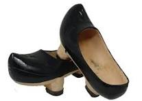

Madera y oficio
Un calzado tradicional tallado en madera, vinculado a la vida del campo y al saber hacer artesano.
Descubre un producto emblemático de Asturias: las madreñas de madera, elaboradas con carácter tradicional y presentadas en una web más cálida, cuidada y auténtica.
Las madreñas forman parte de la identidad rural asturiana y representan una forma de artesanía ligada a la tierra, la madera y el trabajo manual.
Un calzado tradicional tallado en madera, vinculado a la vida del campo y al saber hacer artesano.
Una pieza representativa de Asturias, nacida para resistir la humedad, el barro y el clima del entorno rural.
Cada madreña transmite autenticidad, tradición y una estética rústica que la hace única.
Una tienda con tonos cálidos y naturales para reflejar mejor el carácter de este producto tradicional.
Un producto tradicional presentado de forma clara, elegante y artesana.

Las madreñas asturianas son zuecos tradicionales de madera, típicos de la zona rural, diseñados para proteger del barro, la humedad y el frío.
Stock disponible: 100